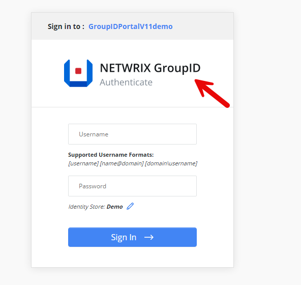
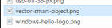
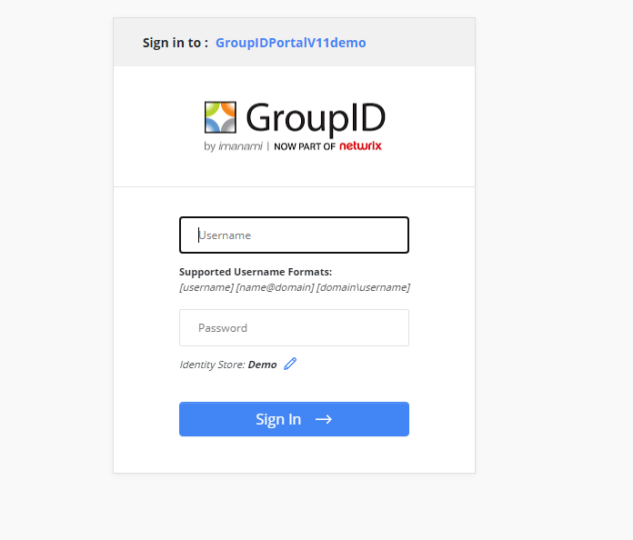

Question
Can you replace the logo on the sign-in page of the Netwrix Directory Manager (formerly Netwrix GroupID) portal?

Answer
Yes, this can be done by replacing the image file in the Directory Manager 11 folder. Follow the steps below to complete this:
-
Navigate to
C:\Program Files\Imanami\GroupID 11.0\GroupIDSecurityService\Inetpub\GroupIDSecurityService\Web\wwwroot\Content\Images -
Replace the image file named
vector-smart-object.png, ensuring the file name, size, and extension remain the same.

NOTE: Take a backup of the original file.
